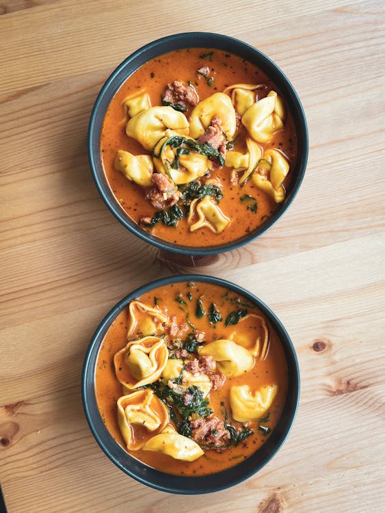

Tortellini Soup
If you're looking for a decently quick and effortless meal after a rough day learning some new code well look no further than my recipe for Tortellini soup. Something you can just do very little prep. Toss a bunch of ingredients into a pot, get it boiling and then simmer until you're ready to eat. A real meal for someone who wants to shut off their brain for a minute and relax while letting the stove top do all the work.
Equipment needed

Ingredients
- Red pepper flakes to taste
- 14 ounce can diced tomatoes
- 1 teaspoon Italian Seasoning
- 8 ounces cheese torellini (refidgerated kind)
- 1 cup grated parmesan cheese
- half cup basil leaves (chopped)
Instructions
- Add oil and butter to a large saucepan over medium heat. Once melted, add the onion and cook, stirring occasionally, 5 minutes.
- Add the garlic. Stir in the flour and cook for another minute.
- Add the vegetable broth, diced tomatoes, tomato sauce, Italian seasoning, and dried basil. Season with salt and pepper. Taste broth and adjust seasonings if needed.
- Bring mixture to a gentle boil and then add the tortellini. Cook for a few minutes, until tortellini are tender.
- Remove from heat and stir in spinach, parmesan cheese, and cream.
- Add chopped basil. Serve warm.
All photo credits: Pexels
Recipe credits:https://tastesbetterfromscratch.com